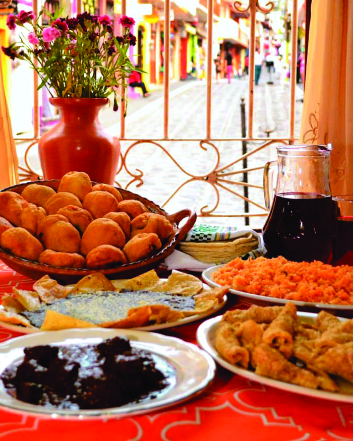
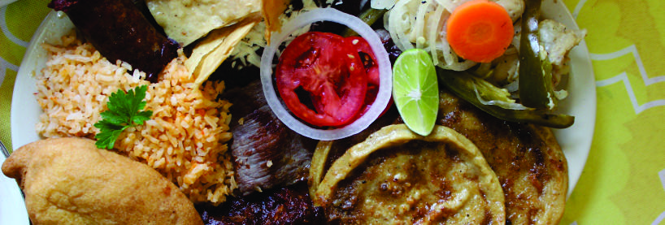

BUENA COCINA. BUENOS MOMENTOS.
A tu gusto.
A tu mesa.
Hay sabores que se disfrutan desde el primer vistazo. Descubre nuestra carta y encuentra tu próximo favorito.
Un vistazo antes del primer bocadoMira nuestro especial sobre tu mesa con realidad aumentada.

EL ESPECIAL DE LA CASAAlgo especial te espera.Fotografía de muestra
EDICIÓN DEOtoño
Cocina que se disfrutaLa carta en tu idiomaUna nueva forma de elegir

SURTIDO DE LA CASATU MESA, UNA NUEVA EXPERIENCIA
Conócelo antes de probarlo.
Nuestros especiales cobran vida en tu pantalla. Gira el platillo, acércate a los detalles y, desde un celular compatible, colócalo sobre tu mesa.
- 01Elige el especial
Busca el símbolo 3D / AR en la carta.
- 02Explora el emplatado
Gira y acerca el modelo con tus dedos.
- 03Llévalo a tu mesa
Activa la AR y apunta a una superficie horizontal.
LOS MOMENTOS CAMBIAN. EL GUSTO QUEDA.
Cada temporada tiene su encanto.
Una carta con el ambiente de cada estación. Elige tu temporada favorita en la parte superior.
HOY EN MARCEOtoño